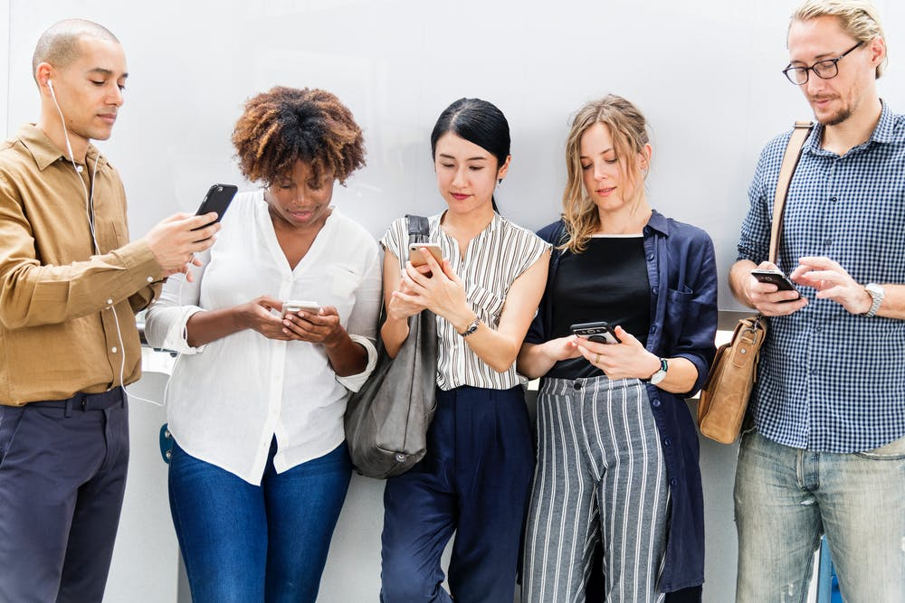

Sosiale Systemer
- Det vertikale sosiale systemet er når vi er fysisk sammen i store eller små grupper. et eksempel er på trening eller på skolem. Det
horisontale sosiale systemet er når vi er online på sosiale medie som Facebook.
- Teknologi kan brukes til å styrke kommunaksjon og sosial tilhørighet ved at det er mye enkelere å kommunisere. I tilleg er det mye enklere
å møte folk som har like interesseer på internettet.
- Språklige og kulturelle minioriteter kan bruke sosiale nettverk akkuratt slik som oss ved at vi kommuniserer med andre, demonstrere og slike ting.
- Jeg bruker ca 7 timer på skolen, 3 timer hver dag med lekser, 30 min med familie, 2,5 timer på trening, 9 timer soving og 3 timer alene på rommet. Jeg brukte sosiale medeir mest når jeg var alene på rommet mitt.
- Det var ren tortur. Tiden gikk veldig sakte og jeg opplevde at jeg brukte mer penger på aktiviteter for å få tiden til å gå.
- Sosiale medier kan misntukes av religiøse og politiske ekstremister ved at de får spredet sitt hatefulle budskap mye enkelere slik at det kan skade og/eller sette samfunnet i fare.
